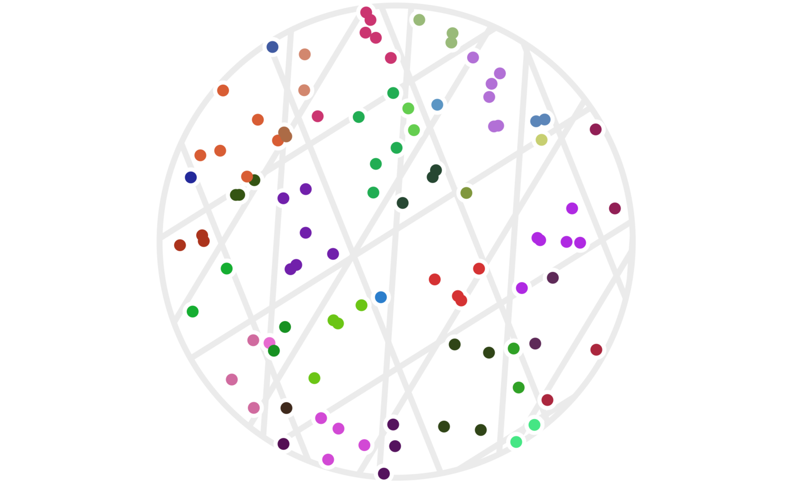
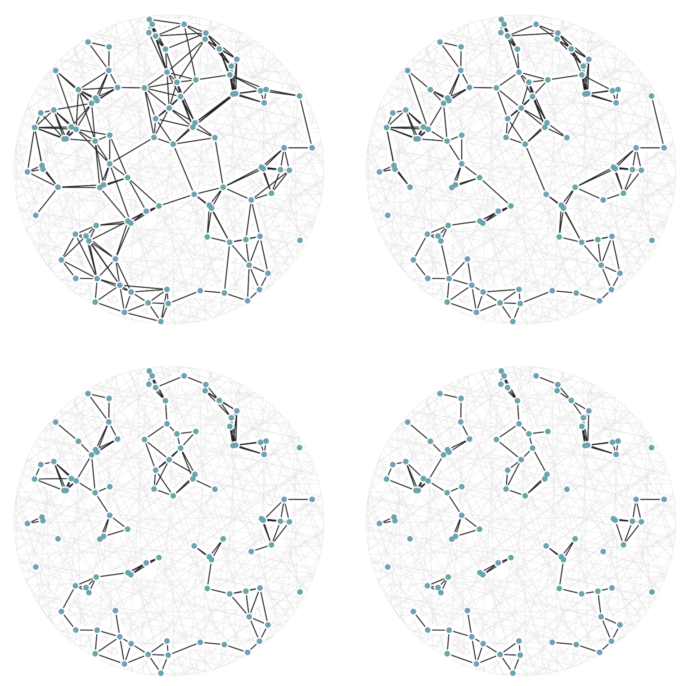
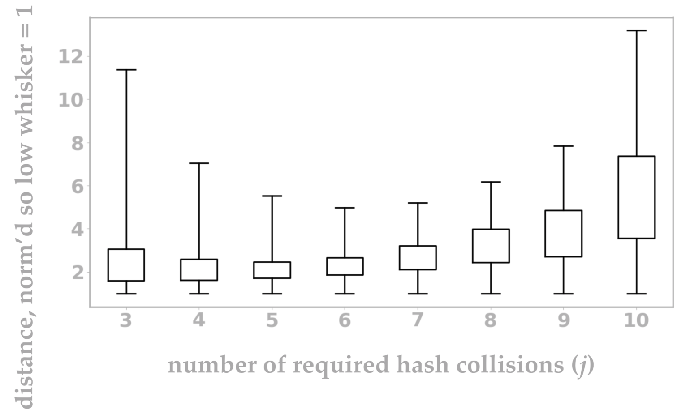

CHECK:
- Update images to all use unitRadius = 2 (or consider it)
- I think figure 4 only has 3 hashes and the text says 4 Try updating it to really have 4 hashes, but I can fall back to 3 if 4 looks bad.
- Search this file for all instances of CHECK, IMAGE, XXX
- Check that the two pdf versions look good, including cross-references
- Check that the references header has no number
- Try to nicify the images in the pdf files
- Ensure that all references to figures in the text are done by mentioning a figure number.
- Follow-up ideas (put these somewhere centralized with other Unbox post ideas)
- MinHash
- ProxHash
- The J-L Lemma
Locality-sensitive hashing (LSH) is a set of techniques that dramatically speed up search-for-neighbors or near-duplication detection on data. These techniques can be used, for example, to filter out duplicates of scraped web pages at an impressive speed, or to perform near-constant-time lookups of nearby points from a geospatial data set.
Outside of the LSH world, a common use for hash functions is in hash tables. As a reminder, the hash functions used in a hash table are designed to map a piece of data to an integer that can be used to look in a particular bucket within the hash table to retrieve or delete that element. Many containers with string keys, such as JavaScript objects or Python dictionaries, are based on hash tables. Although hash tables might not guarantee constant-time lookups, in practice they effectively provide them. If you’re curious, universal hashing is a hashing approach that’s useful in hash table implementations.
There are other classes of hash functions as well. For example, the SHA-1 cryptographic hash function is designed to be difficult to reverse, which is useful if you want to store someone’s password as a hashed value. Hash functions like these are called cryptographic hash functions.
All hash functions have these key properties:
- They map some fixed type of input (such as strings or floats) to discrete values.
- They’re designed so that different input values map to the same output (hashed) value in a manner useful to the application at hand.
Locality-sensitive hash functions are specifically designed so that hash value collisions are more likely for two input values that are close together. Just as there are different implementations of secure hash functions for different use cases, there are different implementations of LSH functions for different data types and for different definitions of being close together. In this post, I’ll give a brief overview of the key ideas, and take a look at a simple example based on random projections (defined below) of vectors into lower-dimensional spaces.
1 A human example
It will probably be much easier to grasp the main idea with an example you can relate to. (The random projection example will be next.)
Suppose you have a million people from across the United States all standing in a huge room. It’s your job to get people who live close together to stand in their own groups. Imagine how much time it would take to walk up to each person, ask for their street address, map that to a lat/long pair, then write code to find geographic clusters, and walk up to every person again and tell them their cluster number. It’s a disaster.
Here’s a much better way to solve this problem: Write every U.S. zip code on poster boards and hang those from the ceiling. Then tell everyone to go stand under the zip code where they live.
Voila! That’s much easier, right? The main idea here is also the main idea behind locality-sensitive hashes. We’re taking an arbitrary data type (a person, who we can think of as a ton of data including their street address), and mapping that data into a set of discrete values (zip codes) such that people who live close together probably hash to the same value. In other words, the clusters (people with the same zip code) are very likely to be groups of neighbors.
A nice benefit of the zip code appraoch is that it’s parallel-friendly. Instead of requiring a center of communication, every person can walk directly to their destination without further coordination. This is a bit surprising in light of the fact that the result (clusters of neighbors) is based entirely on the relationships between the inputs.
Another property of this example is that it is approximate: some people may live across the street from each other, but happen to have different zip codes, in which case they would not be clustered together here. As we’ll see below, it’s also possible for data points to be clustered together even when they’re very far apart, although a well-designed LSH can at least give some mathematical evidence that this will be a rare event, and some implementations manage to guarantee this can never happen.
2 Hashing points with projections
Let’s start with an incredibly simple mathematical function that we can treat as an LSH. Define \(h_1:{\mathbb{R}}^2 \to {\mathbb{Z}}\) for a point \(x=(x_1, x_2)\in{\mathbb{R}}^2\) by
\[ h_1(x) := \lfloor x_1 \rfloor; \]
that is \(h_1(x)\) is the largest integer \(a\) for which \(a\le x_1.\) For example, \(h_1((3.2, -1.2)) = 3.\)
Let’s suppose we choose points at random by uniformly sampling from the origin-centered circle \(\mathcal C\) with radius 4:
\[ \mathcal C := \{ (x, y) : x^2 + y^2 \le 4^2 \}. \]
Suppose we want to find which of our points in \(\mathcal C\) are close together. We can estimate this relationship by considering points \(a\) and \(b \in \mathcal C\) to be clustered together when \(h_1(a) = h_1(b).\) It will be handy to introduce the notation \(a \sim b\) to indicate that \(a\) and \(b\) are in the same cluster. With that notation, we can write our current hash setup as
\[ a \sim b \iff h_1(a) = h_1(b). \]
Figure 1 shows an example of such a clustering.
Figure 1: Twenty points chosen randomly in a circle with radius 4. Each point \(x\) is colored based on its hash value \(h_1(x).\)

You can immediately see that some points are far apart yet clustered, while others are relatively close yet unclustered. There’s also a sense that this particular hash function \(h_1\) was arbitrarily chosen to focus on the x-axis. What would have happened with the same data if we had used instead \(h_2(x) := \lfloor x_2 \rfloor?\) The result is figure 2.
Figure 2: The same twenty points as figure 1, except that we’re using the \(y\) values (instead of \(x\) values) to determine the hash-based cluster colors this time around.

While neither clustering alone is amazing, things start to work better if we use both of them simultaneously. That is, we can redefine our clustering via
\[ a \sim b \iff h_1(a) = h_1(b) \text{ and } h_2(a) = h_2(b). \qquad(1)\]
Our same example points are shown under this new clustering in figure 3.
Figure 3: The same twenty points clustered via two different hashes — one using \(\lfloor x\rfloor\), the other using \(\lfloor y\rfloor.\) As before, points are colored based on which cluster they’re in; a cluster is the set of all points who share both their \(\lfloor x\rfloor\) and their \(\lfloor y\rfloor\) values.

This does a much better job of avoiding clusters with points far apart, although, as we’ll see below, we can still make some improvements.
2.1 Randomizing our hashes
So far we’ve defined deterministic hash functions. Let’s change that by choosing a random rotation matrix \(U\) (a rotation around the origin) along with a random offset \(b \in [0, 1).\) Given such a random \(U\) and \(b,\) we could define a new hash function via
\[ h(x) := \lfloor (Ux)_1 + b \rfloor, \]
where I’m using the notation \(( \textit{vec} )_1\) to indicate the first coordinate of the vector value vec. (That is, the notation \((Ux)_1\) means the first coordinate of the vector \(Ux\).)
It may seem a tad arbitrary to use only the first coordinate here rather than any other, but the fact that we’re taking a random rotation first means that we have the same set of possibilities, with the same probability distribution, as we would when pulling out any other single coordinate value.
The advantage of using randomized hash functions is that any theoretical properties we want to discuss will apply without having to worry about pathologically weird data. Conceptually, if we were using deterministic hash functions, then someone could choose the worst-case data for our hash function, and we’d be stuck with that poor performance (for example, choosing maximally-far apart points that are still clustered together by our \(h_1\) function above). By using randomly chosen hash functions, we can ensure that any average-case behavior of our hash functions applies equally well to all data. This same perspective is useful for hash tables in the form of universal hashing.
Let’s revisit the example points we used above, but now apply some randomized hash functions. In figure 3, points are clustered if and only if both of their hash values (from \(h_1(x)\) and \(h_2(x)\)) collide. We’ll use that same idea, but this time choose four rotations \(U_1, \ldots, U_4\) as well as four offsets \(b_1, \ldots, b_4\) to define \(h_1(), \ldots, h_4()\) via
\[ h_i(x) := \lfloor (U_i x)_1 + b_i \rfloor. \qquad(2)\]
Figure 4 shows the resulting clustering. This time, there are 100 points since using more hash functions has effectively made the cluster areas smaller. We need higher point density to see points that are clustered together now.
Figure 4: One hundred random points clustered using four random hash functions as defined by (2). Points have the same color when all four of their hash values are the same. Each set of parallel light gray lines delineates the regions with the same hash value for each of the \(h_i()\) functions.
It’s not obvious that we actually want to use all four of our hash functions. The issue is that our clusters have become quite small. There are a couple ways to address this. One is to simply increase the scale of the hash functions; for example, set:
\[ \tilde h_i(x) := h_i(x/s), \]
where \(s\) is a scale factor. In this setup, larger \(s\) values will result in larger clusters.
However, there is something a bit more nuanced we can look at, which is to allow some adaptability in terms of how many hash collisions we require. In other words, suppose we have \(k\) total hash functions (just above, we had \(k=4\)). Instead of insisting that all \(k\) hash values must match before we say two points are in the same cluster, we could look at cases where some number \(j \le k\) of them matches. To state this mathematically, we would rewrite equation (1) as
\[ a \sim b \iff \#\{i: h_i(a) = h_i(b)\} \ge j. \qquad(3)\]
Something interesting happens here, which is that the \(a \sim b\) relationship is no longer a clustering, but becomes more like adjacency (that is, sharing an edge) in a graph. The difference is that, in a clustering, if \(a\sim b\) and \(b\sim c,\) the we must have \(a\sim c\) as well; this is called being transitively closed. Graphs don’t need to have this property, and in our case as well, it’s no longer true that our similarity relationship \(a\sim b\) is transitively closed.
It may help your intuition to see this new definition of \(a\sim b\) in action on the same 100 points from figure 4. This time, in figure 5, there are twenty random hashes, and we’re seeing the graphs generated by (3) using cutoff values (values of \(j\)) of 6, 7, 8, and 9. The top-left graph in figure 5 has an edge drawn between two points \(a\) and \(b\) whenever there are at least 6 hash functions \(h_i()\) with \(h_i(a) = h_i(b),\) out of a possible 20 used hash functions.
Figure 5: A set of 100 random points with graph edges drawn according to (3). There are 20 random hash functions used. The top-left graph uses the cutoff value \(j=6.\) The remaining three graphs have cutoff values \(j=7,\) 8, and 9; this means each graph is a subgraph (having a subset of the edges) of the previous one.
In fact, we can visualize all possible cutoff values of 6 or higher — these are values of \(j\) in equation (3) — using a single image with weighted edges, as seen in figure 6.
Figure 6: The same 100 random points from figure 5, this time rendered with edge weights that depend on how many hash collisions are present between any two points. A black edge represents the maximum of 20 hash collisions; the lightest edge represents only 6 hash collisions.

There’s another fun way to build intuition for what information our hashes provide. Let’s see which regions of our circle are matched, and to what degree, by a given point. We can do this by shading regions of the circle that will match a query point, as in figure 7. Every point in each shaded region has the same hash values for all the hash functions used. The first part of figure 7 shows a scaled version of the two-hash system (using \(h_1()\) and \(h_2()\), similar to figure 3) that we saw before; the second part uses 5 random hashes. Call the moving query point \(q;\) then any point \(p\) in a darkly shaded region will have a hash collision \(h_i(p) = h_i(q)\) for all hash functions; in a lightly shaded region that equation will only hold true for a smaller subset of the hash functions \(h_i().\)
Imagine that we were drawing these same images for some theoretically perfect LSH setup that somehow managed to match point \(q\) to every point \(p\) with \(||p-q||\le r\) for some radius \(r\); all other points were not matched. For that perfect LSH setup, images like figure 7 would show a fixed-size circle with center at \(q\) that moved along with \(q\). With that in mind as the perfect LSH result, notice that the second setting in figure 7 is much closer to this ideal than the first setting. Keep in mind that lookups within the shaded regions are no longer linear searches through data, but rather the intersection of \(k\) hash table lookups — that is, lookups of nearby points are significantly faster.
Figure 7: The first setting shows the regions where points would be matched by either two (dark regions) or just one (lighter shade) hash collision with the moving query point \(q\). The second setting shows the analogous idea for 5 random hash functions; in the latter case, the lightest shaded region indicates 3 hash collisions.

It may further help your intuition to see how similarity edges, like those in figure 6, change as a single query point moives. This is the idea behind figure 8, where weighted edges are drawn between a moving query point and 100 random points. Notice that the edge weightings make intuitive sense: they tend to connect strongly to very close neighbors, weakly to farther neighbors, and not at all to points beyond a certain distance.
Figure 8: Edges weighted by how many hash collisions are present between the moving query point and 100 random points. Darker edges indicate more hash collisions. This image uses 12 random hashes, and requires at least 6 hash collisions for an edge to appear.

2.2 Choosing values of \(j\) and \(k\)
As a quick reminder, \(k\) is the number of random hash functions being used, and \(j\) is the minimum number of hash collisions you require (out of \(k\)) in order to consider points \(p, q\) as being nearby, as per (3). I won’t provide a general best answer for the values here, but rather provide some understanding of how these numbers affect the quality of the results you can achieve. Higher \(k\) values enable better behavior — they support LSH systems that act more like a radius-cutoff function (that is, more like \(p\sim q \iff ||p-q||\le r\) for some radius \(r\)); the choice of \(j\) is less obvious.
I wrote a little Python script to estimate the behavior of various \(j\) values for \(k=12\) in 2 dimensions. I’ve put together an image that I think really captures the quality of these \(j\) values, but it takes a bit of explaining up-front.
Given a value \(s \in (0, 1)\), define the distance \(D_s\) as the value satisfying the given equation:
\[ P\big(p \sim_j q \, \big| \, ||p-q|| = D_s\big) = s, \qquad(4)\]
where \(p\sim_j q\) means that \(\#\{i : h_i(p) = h_i(q)\} \ge j.\) Intuitively, if \(\varepsilon\) is close to zero, then the distance \(D_\varepsilon\) is large because the probability of \(p\sim_j q\) is small. The value of \(D_{1/2}\) is just the perfect distance so that \(p \sim_j q\) happens half of the time, and \(D_{1-\varepsilon}\) is a small distance where \(p \sim_j q\) happens almost all the time.
Notice that all our values \(D_s\) depend on the dimension we’re in, as well as on \(j\) and \(k.\) For a fixed value of \(k,\) we would typically want a value of \(j\) so that \(D_\varepsilon / D_{1 - \varepsilon}\) is minimized; as that ratio gets closer to 1 (which is its lower bound), our LSH setup acts more like the ideal radius-cutoff function.
CHECK update all text (slightly above and below) to be more up-to-date with what image 9 now shows
We’re ready for figure 9. This is a series of box plots that I’m using to represent the values \(D_s\) for \(s \in \{\varepsilon, 1/4, 3/4, 1 - \varepsilon\},\) where \(\varepsilon = 10^{-5}.\) For each value of \(j,\) the \(D_s\) values have been divided through by \(D_{1/2}\) so that the effective median value is 1. This normalization is important because, without it, it would be much more difficult to visually compare the scales of the ranges for each \(j.\) In a normalized setting, the best possible value of \(j\) will result in the smallest possible ratio \(D_\varepsilon / D_{1 - \varepsilon},\) which we can see visually as a short box plot. In figure 9, the value \(j=9\) performs the best.
Figure 9: Intuitively, each box plot represents the distances at which points \(p, q\) will achieve mixed results (sometimes classified as nearby, other times as not) from our LSH setup. A very short box plot is ideal because it means close points (closer than the bottom whisker) will very likely have \(p\sim q\) and far points (farther than the top whisker) will very likely have \(p\not\sim q.\) Formally, each box plot shows, from top to bottom, the four values \(D_\varepsilon\) (top whisker), \(D_{1/4}\) (top of the box), \(D_{3/4}\) (bottom of the box), and \(D_{1 - \varepsilon}\) (bottom whisker), with these values being each divided through by \(D_{1/2}\) so that the effective median of the box plot is at 1. The term \(D_s\) was defined in (4).
![Figure 9: Intuitively, each box plot represents the distances at which points p, q will achieve mixed results (sometimes classified as nearby, other times as not) from our LSH setup. A very short box plot is ideal because it means close points (closer than the bottom whisker) will very likely have p\sim q and far points (farther than the top whisker) will very likely have p\not\sim q. Formally, each box plot shows, from top to bottom, the four values D_\varepsilon (top whisker), D_{1/4} (top of the box), D_{3/4} (bottom of the box), and D_{1 - \varepsilon} (bottom whisker), with these values being each divided through by D_{1/2} so that the effective median of the box plot is at 1. The term D_s was defined in (4).](images/image9@2x.png)
2.3 Why an LSH is faster
So far we’ve been sticking to 2-dimensional data because that’s easier to visualize in an article. However, if you think about computing 10 hashes for every 2-dimensional point in order to find neighbors, it may feel like you’re doing more work than the simple solution of a linear search through your points. Let’s review cases where using an LSH is more efficient than other methods of finding nearby points.
2.3.1 Zero linear search
If you have a huge number \(n\) of points, and it’s reasonable for you to index those points ahead of time — meaning, you can afford to compute all \(k\) hash values for each point — then you can completely avoid the linear-time cost of a brute force search for nearby points given a new query point. This speed-up is relevant in any dimension, including the simple 2-dimensional case.
2.3.2 Fewer hashes needed in higher dimensions
Another effect that may be less obvious is that you can get away with fewer hash values (a smaller \(k\) value) in higher dimensions. There are some mathematically sophisticated ways to quantify that statement, but it may be even easier to understand graph based on empirically derived data.
Here’s a summary of some random sampling I did in order to explore the relationship between various values of \(j\) for \(d=100\) dimensional data using \(k=10\) different random hashes: CHECK
CHECK new image here I guess!
Figure 10: CHECK description here
CHECK the whole next paragraph What’s interesting here is that we get a relatively tight box plot for \(j\) values around CHECK. This means that we can choose the threshold \(j=CHECK\) in equation (3) and have fairly good confidence that our hash-based “nearby” relationship closely matches reality.
We can even quantify this precisely. Although this article doesn’t prove the following implications, the empirical evidence found CHECK(add link to code) strongly suggests that these are in fact the correct values:
\[ \text{dist}(a, b) > \alpha \Rightarrow P(\#\{i : h_i(a) = h_i(b)\} < j) > 0.95; \]
\[ \text{dist}(a, b) < \beta \Rightarrow P(\#\{i : h_i(a) = h_i(b)\} \ge j) < 0.05. \]
CHECK(the actual identities may end up being based on the left side using a \(j\) value rather than a distance to start with).
We might interpret these last two expressions as saying that we believe at least 99% of our pairwise relationships are correctly classified. And we’re able to do so while saving about \(O(n)\) speed.
2.4 Other data types and approaches
This article has focused on numeric, 2-dimensional data because it’s easier to visualize. Locality-sensitive hashes can certainly be used for many other data types, including strings, sets, or high-dimensional vectors.
There are also other ways to specifically measure the performance of a particular hashing approach. For example, CHECK.
Yet another ingredient to throw into the mix here are techniques to boost performance which can treat any LSH as a black box. My favorite approach here is to simply perform multiple lookups on a hash system, each time using \(q + \varepsilon\) as an input, where \(q\) is your query value, and \(\varepsilon\) is a random variable centered at zero. CHECK(add a bit about what this achieves; add a reference for it)
There’s a lot more that can be said about LSH techniques. If there is reader interest, I may write a follow-up article explaining the details of min-wise hashing, which is a fun case that’s simultaneously good at quickly finding nearby sets as well as nearby strings.
CHECK ensure that the references section is not numbered